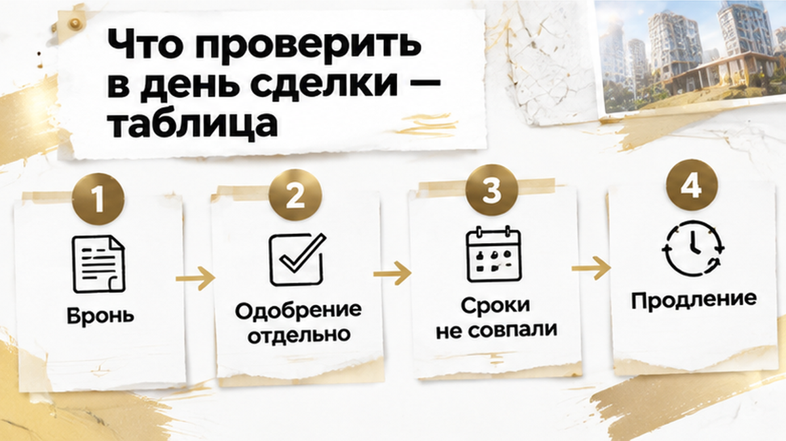
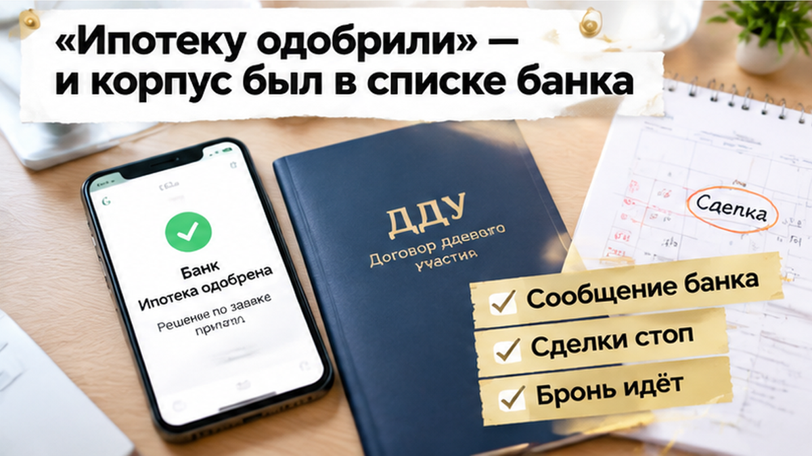
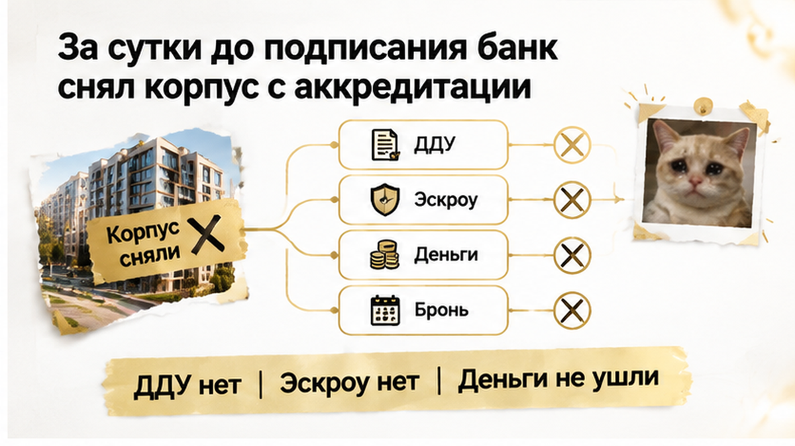
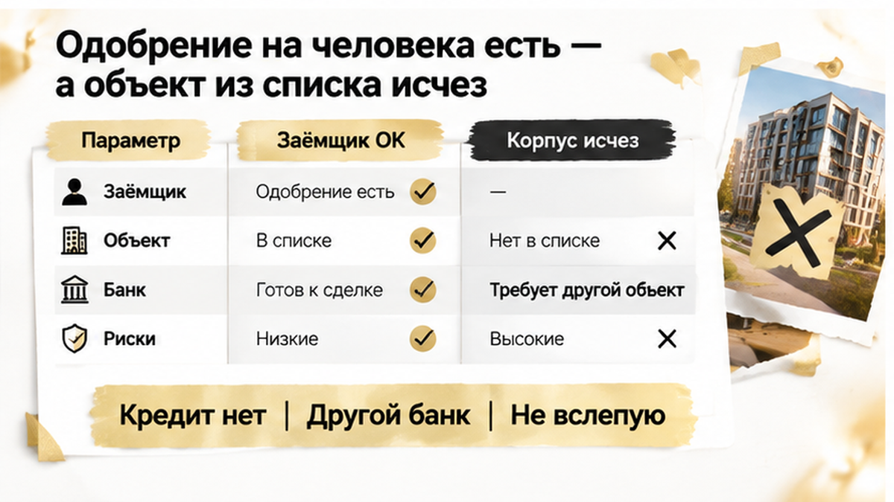
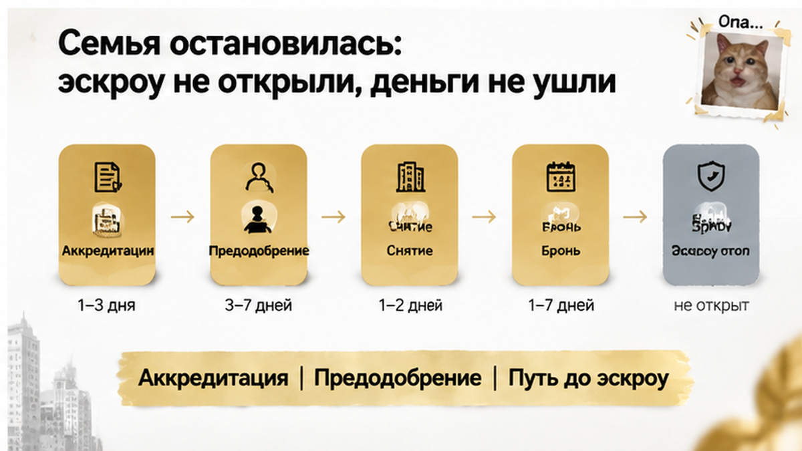

В Тюмени банк снял корпус новостройки с аккредитации примерно за сутки до подписания ДДУ — ипотечная сделка семьи с детьми остановилась. Квартиру уже забронировали и оплатили бронь, а по заёмщикам было предварительное одобрение. На кухне лежал договор бронирования, в телефоне — переписка с застройщиком, и срок удержания квартиры подходил к концу. Казалось, осталось подписать документы, но прежнее решение банка ещё не означало, что он выдаст деньги именно на эту квартиру. Теперь нужно было разобраться с кредитом, пока квартира не вернулась в продажу.
Я Святослав Шакин, The Риэлтор, Тюмень. В Telegram разбираю, что проверять за обещанием «всё одобрено». Материалы и связь — также в MAX.
«Нам же ипотеку одобрили. Что ещё проверять?» Понятный вопрос. Семья прошла проверку, квартиру выбрала, бронь внесла. Для покупателя это выглядит как одна договорённость. Для банка — несколько отдельных решений.
Сначала банк оценивает заёмщика: доходы, кредитную историю, действующие долги. Предварительное одобрение означает, что на этом этапе заявка подходит под его требования. Но впереди остаётся проверка квартиры и документов сделки.
Аккредитация — решение конкретного банка кредитовать конкретный корпус. Не весь бренд застройщика. Не любой дом с таким же названием на рекламном щите. Один корпус может подходить банку, соседний — нет.
Обычный покупатель видит логотип банка на странице ЖК и думает: «Значит, ипотека здесь есть». Риэлтор спрашивает: «На какой корпус, по какой программе и действует ли это сейчас?» Разница в нескольких словах, а от ответа зависит возможность покупки.
При бронировании выбранный корпус был в списке. Однако этот статус не закрепляется за покупателем вместе с квартирой. Банк вправе пересматривать решение: из-за документов, темпов строительства, финансового положения застройщика, судебных обстоятельств или собственных лимитов.
Снятие с аккредитации само по себе не доказывает банкротство застройщика. Но и прежнее присутствие в списке не гарантирует срок сдачи дома. Здесь нужен ответ о конкретном объекте, а не вывод «всё пропало» или «ничего страшного».
Не стоит путать это с подорожанием кредита. В разборе остановки сделки из-за роста ставки изменился платёж. Здесь вопрос другой: готов ли банк вообще финансировать покупку в выбранном корпусе.

Бронь удерживает квартиру на условиях соглашения с застройщиком. Предварительное одобрение действует по правилам банка. Эти сроки не обязаны совпадать, и один документ не продлевает другой.
«Банк ещё рассматривает, значит, квартира нас подождёт?» Только если это следует из условий брони или стороны договорились о продлении. Иначе срок может закончиться раньше проверки. Вернуть квартиру в продажу застройщик может в соответствии с подписанным соглашением.
Поэтому в договоре бронирования важны не только цена и номер квартиры. Нужно найти срок удержания, порядок уведомления и условия возврата платы. Отдельный вопрос: что предусмотрено, если банк не кредитует объект? Возврат, перенос брони, другой корпус — или такого пункта вообще нет?
Если ясного условия нет, позицию застройщика лучше получить письменно. «Менеджер обещал разобраться» не отвечает ни на вопрос о деньгах, ни на вопрос о дате окончания брони.
У банковского одобрения своя проверка: до какого дня оно действует, на какую сумму и программу выдано, что осталось согласовать. Даже при действующем решении по семье банк может повторно проверить документы и объект.
Для льготной ипотеки нужно отдельно уточнить соответствие корпуса и схемы покупки требованиям программы. Фраза «семейная ипотека здесь есть» слишком общая для подписания договора.
До сделки полезно согласовать запас времени, а не только дату встречи. Спросите, возможно ли продление брони и как его оформить, если проверка затянется. Такой разговор заранее спокойнее, чем попытка удержать квартиру устными обещаниями в последний день.

Вечером пришло сообщение от менеджера банка: новые ипотечные сделки по выбранному корпусу больше не проводят. Не «донесите справку» и не «подождите расчёт». Банк перестал кредитовать этот объект для новых покупателей.
Срок брони при этом продолжал идти. Для семьи следующий шаг уже выглядел понятным: подписать ДДУ — договор участия в долевом строительстве. Но теперь под этим шагом не было главного: подтверждённого источника денег на покупку.
«Может, подпишем, а с ипотекой потом разберёмся?» Именно здесь спешка становится дорогой. Подпись под ДДУ — не способ удержать квартиру без последствий. У покупателя могут появиться обязательства перед застройщиком, хотя ожидаемый кредит ещё под вопросом.
Обычный покупатель видит: квартира выбрана, документы готовы, осталось оформить. Риэлтор спрашивает: «Этот банк сейчас готов выдать деньги именно на этот корпус?» Вчерашнее согласие не отвечает на сегодняшний вопрос.
Почему изменился статус, нужно выяснять отдельно. Банк проверяет документы на землю, разрешение на строительство, финансовое положение застройщика и стадию работ. Причиной пересмотра могут быть документы, лимиты или другие обстоятельства. Само снятие с аккредитации ещё не доказывает банкротство.
Поэтому сначала — письменный ответ банка: какой объект исключён, касается ли ограничение новых сделок, можно ли продолжить эту заявку. Затем — позиция застройщика и запрос на продление брони. Не обещание «мы вас подождём», а зафиксированные условия и срок.
Список других банков у отдела продаж тоже стоит запросить. Только воспринимать его нужно как список для проверки, а не как готовое спасение сделки. Каждый банк должен сам подтвердить, что кредитует нужный корпус по подходящей программе.
«Но нам же ипотеку одобрили. Что теперь не так?» Не обязательно что-то изменилось у семьи. Доходы, первоначальный взнос и предварительное решение по заёмщикам могут остаться прежними. Проблема — в сочетании конкретного банка, корпуса и новой сделки.
Здесь важно не путать два понятия. Аккредитация отвечает на вопрос, готов ли банк кредитовать покупку в этом объекте. Эскроу — специальный счёт для денег покупателя. Наличие такой схемы в проекте не обязывает банк выдать ипотеку.
«В доме есть эскроу» — не ответ на вопрос «нам дадут кредит?» Это разные проверки. Нельзя закрыть проблему с финансированием ссылкой на то, что деньги покупателей предусмотрено хранить на защищённом счёте.
Рабочих вариантов несколько: другой банк, продление брони, смена программы или квартиры. Возможен и отказ от покупки. Но ни один вариант не стоит выбирать только ради того, чтобы сохранить назначенный день подписания.
При переходе в другой банк сравнивают полную стоимость кредита, требования к объекту и срок решения. При смене программы — новые условия и посильность платежа. Если предлагают рассрочку, отдельно считают взнос, платежи, общую сумму и последствия просрочки. Это не замена ипотеки «с теми же настройками».
С платой за бронь тоже нельзя гадать. Возвращают ли её при отказе банка? Указано ли снятие объекта с аккредитации? Как и когда нужно уведомить застройщика? Ответы ищут в договоре, а недостающие условия уточняют письменно. Возможность выйти без потери платы нужно проверить, а не предполагать.


Семья не стала подписывать ДДУ «на всякий случай». Договор долевого участия остался неподписанным, эскроу не открыли, деньги за квартиру застройщику не перечислили. Плата за бронь — отдельный вопрос: её возврат зависит от условий договора бронирования.
Квартиру можно было потерять, если срок брони закончится. Но подписать договор без понятного источника оплаты — не способ её спасти. Это риск получить обязательства перед застройщиком, когда ожидаемого кредита ещё нет.
Семья остановилась до ДДУ и эскроу, а не после появления обязательств по покупке. Дальше можно было обсуждать продление брони, проверять другой банк или менять квартиру. Ни один из этих вариантов не требовал подписи «пока банк разбирается».
«Вы бы успели перейти в другой банк за сутки или сняли бы бронь?»
Здесь важно не перепутать две проверки. Аккредитация отвечает на вопрос, готов ли банк кредитовать конкретный корпус. Эскроу — счёт, на котором деньги покупателя хранятся до выполнения условий их передачи застройщику. Наличие такой схемы в проекте само по себе не обязывает банк выдать ипотеку.
Обычный покупатель видит: «В проекте есть эскроу, значит, можно оформляться». Риэлтор спрашивает: «Кто подтвердил кредит именно на эту квартиру и как деньги попадут на счёт?» Разница не в осторожности ради осторожности. Нужно понимать, за счёт чего покупатель исполнит договор.
В разборе одобрения семейной ипотеки без открытия эскроу — тот же важный разрыв между банковским решением и движением денег. А остановка сделки из-за роста ставки — другая история: там меняется платёж, здесь под вопросом само кредитование корпуса.

Проверка при выборе квартиры не заменяет проверку перед подписью. Утром в день сделки нужен актуальный ответ банка, а не прошлое сообщение менеджера: «Всё одобрено». Просите указать корпус, программу и текущий этап заявки в переписке, личном кабинете или официальном документе.
| Что проверить | Как зафиксировать | Если есть проблема |
|---|---|---|
| Аккредитацию именно корпуса и очереди | Получить подтверждение банка с объектом, программой и датой | Не подписывать ДДУ; проверить другие банки |
| Действительность предодобрения | Уточнить срок, сумму, программу и этап заявки | Попросить новый расчёт и письменный ответ о движении к кредитному договору |
| Причину снятия с аккредитации | Сопоставить ответы банка и застройщика | Проверить документы проекта и не считать отзыв доказательством банкротства |
| Условия бронирования | Перечитать пункт о возврате платы и сроке брони | Попросить продление или возврат по договору |
| Путь до эскроу | Уточнить, кто открывает счёт и когда перечисляется кредит | Не подписывать документы без понятного источника средств и порядка открытия счёта |
| Другие банки по корпусу | Проверить статус напрямую, а не только по рекламе | Сравнить полную стоимость, срок решения и требования к объекту |
| Документы проекта | Сверить декларацию и сведения на наш.дом.рф | Запросить разъяснения до новых платежей |
Список банков на сайте застройщика — начало поиска, не подтверждение выдачи. Каждый запасной вариант проверяйте напрямую. Сравнивайте не только ставку, но и полную стоимость кредита, требования программы и время на решение. Переход в другой банк не происходит автоматически вместе с переносом документов.
Снятие корпуса с аккредитации не доказывает банкротство. Причиной могут быть документы, банковские лимиты или другие обстоятельства. Но и объяснение «это просто технический вопрос» не заменяет подтверждения, что вашу сделку готовы провести. До выяснения причины новые подписи и платежи лучше не форсировать.
Если вместо ипотеки предлагают рассрочку, считайте её отдельно: взнос, платежи, срок, общую сумму и последствия просрочки. А если меняется юридическое лицо застройщика, нужен уже отдельный разбор нового ДДУ и условий эскроу. Это не исправление одной строчки.
В Telegram «The Риэлтор | Тюмень» и MAX Святослава Шакина разбираю, что проверять за словами «банк одобрил». Чтобы к подписанию у вас были ответы, а не только обещания.
Хорошая подготовка оставляет выбор: банк, срок, программу или другую квартиру. Поэтому условия возврата платы за бронь и запасной вариант финансирования стоит обсуждать до оплаты бронирования. Спокойствие здесь даёт не скорость подписания, а понимание следующего шага.